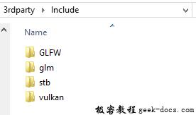
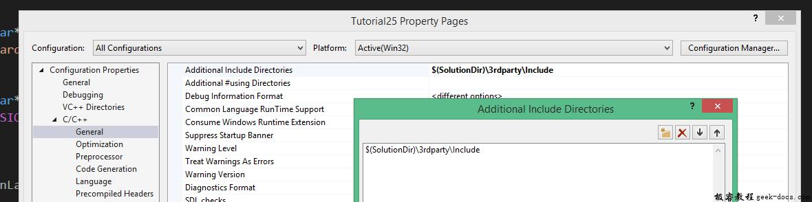

Vulkan 图像(Images)，到目前为止，几何图形使用每个顶点颜色进行着色处理，这是一个局限性比较大的方式。在本教程的一部分内容中，我们实现纹理映射，使得几何图形看起来更加生动有趣。这也会允许我们在未来的章节中加载和绘制基本的3D模型。
介绍
添加一个纹理贴图到应用程序需要以下几个步骤：
- 创建设备内存支持的图像对象
- 从图像文件填充像素
- 创建图像采样器
- 添加组合的图像采样器描述符，并从纹理采样颜色信息
我们之前已经使用过图像对象，但是它们都是由交换链扩展自动创建的。这次我们将要自己创建。创建一个图像及填充数据与之前的顶点缓冲区创建类似。我们开始使用暂存资源并使用像素数据进行填充，接着将其拷贝到最终用于渲染使用的图像对象中。尽管可以为此创建一个暂存图像，Vulkan也允许从VkBuffer中拷贝像素到图像中，这部分API在一些硬件上非常有效率 faster on some hardware。我们首先会创建缓冲区并通过像素进行填充，接着创建一个图像对象拷贝像素。创建一个图像与创建缓冲区类似。就像我们之前看到的那样，它需要查询内存需求，分配设备内存并进行绑定。
然而，仍然有一些额外的工作需要面对，当我们使用图像的时候。我们知道图像可以有不同的布局，它影响实际像素在内存中的组织。由于图形硬件的工作原理，简单的逐行存储像素可能不是最佳的性能选择。对图像执行任何操作时，必须确保它们有最佳的布局，以便在该操作中使用。实际上我们已经在指定渲染通道的时候看过这些布局类型：
- VK_IMAGE_LAYOUT_PRESENT_SRC_KHR: 用于呈现，使用最佳
- VK_IMAGE_LAYOUT_COLOR_ATTACHMENT_OPTIMAL: 当使用附件从片段着色器进行写入时候，使用最佳
- VK_IMAGE_LAYOUT_TRANSFER_SRC_OPTIMAL: 作为传送源操作的时候，使用最佳，比如vkCmdCopyImageToBuffer
- VK_IMAGE_LAYOUT_TRANSFER_DST_OPTIMAL: 作为传输目的地的时候，使用最佳，比如vkCmdCopyBufferToImage
- VK_IMAGE_LAYOUT_SHADER_READ_ONLY_OPTIMAL: 着色器中用于采样，使用最佳
变换图像布局的最常见方式之一是管线屏障 pipeline barrier。管线屏障主要用于同步访问资源，诸如确保图像在读之前写入，但是也可以用于布局变换。在本章节中我们将会看到如何使用管线屏障完成此任务。除此之外，屏障也可以用于VK_SHARING_MODE_EXCLUSIVE模式下队列簇宿主的变换。
图像库
用于加载图片的库有很多，甚至可以自己编写代码加载简单格式的图片比如BMP和PPM。在本教程中我们将会使用stb_image库。优势是所有的代码都在单一的文件中，所以它不需要任何棘手的构建配置。下载stb_image.h头文件并将它保存在方便的位置，在这里我们存放与GLFW、GLM、vulkan头文件的相同的目录中 3rdparty\Include 下，如图所示：

Visual Studio，确认$(SolutionDir)\3rdparty\Include添加到 Additional Include Directories 路径中。

加载图像
包含image库的头文件：
#define STB_IMAGE_IMPLEMENTATION
#include <stb_image.h>
默认情况下头文件仅仅定义了函数的原型。一个代码文件需要使用STB_IMAGE_IMPLEMENTATION定义包含头文件中定义的函数体，否则会收到链接错误。
void initVulkan() {
...
createCommandPool();
createTextureImage();
createVertexBuffer();
...
}...void createTextureImage() {}
创建新的函数createTextureImage用于加载图片和提交到Vulkan图像对象中。我们也会使用命令缓冲区，所以需要在createCommandPool之后调用。
在shaders目录下新增新的textures目录，用于存放贴图资源。我们将会从目录中加载名为texture.jpg的图像。这里选择 CC0 licensed image 并调整为512 x 512像素大小，但是在这里可以使用任何你期望的图片。库支持很多主流的图片文件格式，比如JPEG，PNG，BMP和GIF。
使用库加载图片是非常容易的：
void createTextureImage() {
int texWidth, texHeight, texChannels;
stbi_uc* pixels = stbi_load("textures/texture.jpg", &texWidth, &texHeight, &texChannels, STBI_rgb_alpha);
VkDeviceSize imageSize = texWidth * texHeight * 4; if (!pixels) {
throw std::runtime_error("failed to load texture image!");
}
}
stbi_load函数使用文件的路径和通道的数量作为参数加载图片。STBI_rgb_alpha值强制加载图片的alpha通道，即使它本身没有alpha，但是这样做对于将来加载其他的纹理的一致性非常友好。中间三个参数用于输出width, height 和实际的图片通道数量。返回的指针是像素数组的第一个元素地址。总共 texWidth * texHeight * 4 个像素值，像素在STBI_rgba_alpha的情况下逐行排列，每个像素4个字节。
临时缓冲区
我们现在要在host visible内存中创建一个缓冲区，以便我们可以使用vkMapMemory并将像素复制给它。在createTextureImage函数中添临时缓冲区变量。
VkBuffer stagingBuffer;
VkDeviceMemory stagingBufferMemory;
缓冲区必须对于host visible内存可见，为此我们对它进行映射，之后使用它作为传输源拷贝像素到图像对象中。
createBuffer(imageSize, VK_BUFFER_USAGE_TRANSFER_SRC_BIT, VK_MEMORY_PROPERTY_HOST_VISIBLE_BIT | VK_MEMORY_PROPERTY_HOST_COHERENT_BIT, stagingBuffer, stagingBufferMemory);
我们可以直接从库中加载的图片中拷贝像素到缓冲区：
void* data;
vkMapMemory(device, stagingBufferMemory, 0, imageSize, 0, &data);
memcpy(data, pixels, static_cast<size_t>(imageSize));
vkUnmapMemory(device, stagingBufferMemory);
不要忘记清理原图像的像素数据：
stbi_image_free(pixels);
纹理图像
虽然我们可以通过设置着色器访问缓冲区中的像素值，但是在Vulkan中最好使用image对象完成该操作。图像对象可以允许我们使用二维坐标，从而更容易的快速的检索颜色。图像中的像素被成为纹素即纹理元素，我们将从此处开始使用该名称。添加以下新的类成员：
VkImage textureImage;
VkDeviceMemory textureImageMemory;
对于图像的参数通过VkImageCreateInfo结构体来描述：
VkImageCreateInfo imageInfo = {};
imageInfo.sType = VK_STRUCTURE_TYPE_IMAGE_CREATE_INFO;
imageInfo.imageType = VK_IMAGE_TYPE_2D;
imageInfo.extent.width = static_cast<uint32_t>(texWidth);
imageInfo.extent.height = static_cast<uint32_t>(texHeight);
imageInfo.extent.depth = 1;
imageInfo.mipLevels = 1;
imageInfo.arrayLayers = 1;
imageType字段指定图像类型，告知Vulkan采用什么样的坐标系在图像中采集纹素。它可以是1D，2D和3D图像。1D图像用于存储数组数据或者灰度图，2D图像主要用于纹理贴图，3D图像用于存储立体纹素。extent字段指定图像的尺寸，基本上每个轴上有多少纹素。这就是为什么深度必须是1而不是0。我们的纹理不会是一个数组，而现在我们不会使用mipmapping功能。
imageInfo.format = VK_FORMAT_R8G8B8A8_UNORM;
Vulkan支持多种图像格式，但无论如何我们要在缓冲区中为纹素应用与像素一致的格式，否则拷贝操作会失败。
imageInfo.tiling = VK_IMAGE_TILING_OPTIMAL;
tiling字段可以设定两者之一：
- VK_IMAGE_TILING_LINEAR: 纹素基于行主序的布局，如pixels数组
- VK_IMAGE_TILING_OPTIMAL: 纹素基于具体的实现来定义布局，以实现最佳访问
与图像布局不同的是，tiling模式不能在之后修改。如果需要在内存图像中直接访问纹素，必须使用VK_IMAGE_TILING_LINEAR。我们将会使用暂存缓冲区代替暂存图像，所以这部分不是很有必要。为了更有效的从shader中访问纹素，我们将会使用VK_IMAGE_TILING_OPTIMAL。
imageInfo.initialLayout = VK_IMAGE_LAYOUT_UNDEFINED;
对于图像的initialLayout字段，仅有两个可选的值：
- VK_IMAGE_LAYOUT_UNDEFINED: GPU不能使用，第一个变换将丢弃纹素。
- VK_IMAGE_LAYOUT_PREINITIALIZED: GPU不能使用，但是第一次变换将会保存纹素。
几乎没有必要在第一次转换时候保留纹素。然而，一个例子是，如果您想将图像用作与 VK_IMAGE_TILING_LINEAR 布局相结合的暂存图像。在这种情况下，您需要将纹素数据上传到它，然后将图像转换为传输源，而不会导致丢失数据。但是，在我们的例子中，我们首先将图像转换为传输目标，然后从缓冲区对象复制纹理数据，因此我们不需要此属性，可以安全地使用 VK_IMAGE_LAYOUT_UNDEFINED 。
imageInfo.usage = VK_IMAGE_USAGE_TRANSFER_DST_BIT | VK_IMAGE_USAGE_SAMPLED_BIT;
这里的** usage字段与缓冲区创建过程中使用的 **usage 字段有相同的语意。图像将会被用作缓冲区拷贝的目标，所以应该设置作为传输目的地。我们还希望从着色器中访问图像对我们的mesh进行着色，因此具体的usage还要包括VK_IMAGE_USAGE_SAMPLED_BIT。
imageInfo.sharingMode = VK_SHARING_MODE_EXCLUSIVE;
因为图像会在一个队列簇中使用：支持图形或者传输操作。
imageInfo.samples = VK_SAMPLE_COUNT_1_BIT;
imageInfo.flags = 0; // Optional
samples标志位与多重采样相关。这仅仅适用于作为附件的图像，所以我们坚持一个采样数值。与稀疏图像相关的图像有一些可选的标志。稀疏图像是仅仅某些区域实际上被存储器支持的图像。例如，如果使用3D纹理进行立体地形，则可以使用此方法来避免分配内存来存储大量“空气”值。我们不会在本教程中使用，所以设置默认值0。
if (vkCreateImage(device, &imageInfo, nullptr, &textureImage) != VK_SUCCESS) {
throw std::runtime_error("failed to create image!");
}
使用vkCreateImage创建图像，这里没有任何特殊的参数设置。可能图形硬件不支持VK_FORMAT_R8G8B8A8_UNORM格式。我们应该持有一个可以替代的可以接受的列表。然而对这种特定格式的支持是非常普遍的，我们将会跳过这一步。使用不同的格式也需要繁琐的转换过程。我们会回到深度缓冲区章节，实现类似的系统。
VkMemoryRequirements memRequirements;
vkGetImageMemoryRequirements(device, textureImage, &memRequirements);VkMemoryAllocateInfo allocInfo = {};
allocInfo.sType = VK_STRUCTURE_TYPE_MEMORY_ALLOCATE_INFO;
allocInfo.allocationSize = memRequirements.size;
allocInfo.memoryTypeIndex = findMemoryType(memRequirements.memoryTypeBits, VK_MEMORY_PROPERTY_DEVICE_LOCAL_BIT);if (vkAllocateMemory(device, &allocInfo, nullptr, &textureImageMemory) != VK_SUCCESS) {
throw std::runtime_error("failed to allocate image memory!");
}vkBindImageMemory(device, textureImage, textureImageMemory, 0);
为图像工作分配内存与为缓冲区分配内存是类似的，使用vkGetImageMemoryRequirements代替vkGetBufferMemoryRequirements，并使用vkBindImageMemory代替vkBindBufferMemory。
这个函数已经变得比较庞大臃肿了，而且需要在后面的章节中创建更多的图像，所以我们应该将图像创建抽象成一个createImage函数，就像之前为buffers缓冲区做的事情一样。创建函数并将图像对象的创建和内存分配移动过来：
void createImage(uint32_t width, uint32_t height, VkFormat format, VkImageTiling tiling, VkImageUsageFlags usage, VkMemoryPropertyFlags properties, VkImage& image, VkDeviceMemory& imageMemory) {
VkImageCreateInfo imageInfo = {};
imageInfo.sType = VK_STRUCTURE_TYPE_IMAGE_CREATE_INFO;
imageInfo.imageType = VK_IMAGE_TYPE_2D;
imageInfo.extent.width = width;
imageInfo.extent.height = height;
imageInfo.extent.depth = 1;
imageInfo.mipLevels = 1;
imageInfo.arrayLayers = 1;
imageInfo.format = format;
imageInfo.tiling = tiling;
imageInfo.initialLayout =VK_IMAGE_LAYOUT_UNDEFINED;
imageInfo.usage = usage;
imageInfo.samples = VK_SAMPLE_COUNT_1_BIT;
imageInfo.sharingMode = VK_SHARING_MODE_EXCLUSIVE; if (vkCreateImage(device, &imageInfo, nullptr, &image) != VK_SUCCESS) {
throw std::runtime_error("failed to create image!");
} VkMemoryRequirements memRequirements;
vkGetImageMemoryRequirements(device, image, &memRequirements); VkMemoryAllocateInfo allocInfo = {};
allocInfo.sType = VK_STRUCTURE_TYPE_MEMORY_ALLOCATE_INFO;
allocInfo.allocationSize = memRequirements.size;
allocInfo.memoryTypeIndex = findMemoryType(memRequirements.memoryTypeBits, properties); if (vkAllocateMemory(device, &allocInfo, nullptr, &imageMemory) != VK_SUCCESS) {
throw std::runtime_error("failed to allocate image memory!");
} vkBindImageMemory(device, image, imageMemory, 0);
}
这里使用了width, height, format, tiling mode, usage和memory properties参数，因为这些参数根据教程中创建的图像而不同。
createTextureImage函数现在简化为：
void createTextureImage() {
int texWidth, texHeight, texChannels;
stbi_uc* pixels = stbi_load("textures/texture.jpg", &texWidth, &texHeight, &texChannels, STBI_rgb_alpha);
VkDeviceSize imageSize = texWidth * texHeight * 4; if (!pixels) {
throw std::runtime_error("failed to load texture image!");
} VkBuffer stagingBuffer;
VkDeviceMemory stagingBufferMemory;
createBuffer(imageSize, VK_BUFFER_USAGE_TRANSFER_SRC_BIT, VK_MEMORY_PROPERTY_HOST_VISIBLE_BIT | VK_MEMORY_PROPERTY_HOST_COHERENT_BIT, stagingBuffer, stagingBufferMemory); void* data;
vkMapMemory(device, stagingBufferMemory, 0, imageSize, 0, &data);
memcpy(data, pixels, static_cast<size_t>(imageSize));
vkUnmapMemory(device, stagingBufferMemory); stbi_image_free(pixels); createImage(texWidth, texHeight, VK_FORMAT_R8G8B8A8_UNORM, VK_IMAGE_TILING_OPTIMAL, VK_IMAGE_USAGE_TRANSFER_DST_BIT | VK_IMAGE_USAGE_SAMPLED_BIT, VK_MEMORY_PROPERTY_DEVICE_LOCAL_BIT, textureImage, textureImageMemory);
}
布局转换
我们将要编写的函数会涉及到记录和执行命令缓冲区，所以现在适当的移除一些逻辑到辅助函数中去：
VkCommandBuffer beginSingleTimeCommands() {
VkCommandBufferAllocateInfo allocInfo = {};
allocInfo.sType = VK_STRUCTURE_TYPE_COMMAND_BUFFER_ALLOCATE_INFO;
allocInfo.level = VK_COMMAND_BUFFER_LEVEL_PRIMARY;
allocInfo.commandPool = commandPool;
allocInfo.commandBufferCount = 1; VkCommandBuffer commandBuffer;
vkAllocateCommandBuffers(device, &allocInfo, &commandBuffer); VkCommandBufferBeginInfo beginInfo = {};
beginInfo.sType = VK_STRUCTURE_TYPE_COMMAND_BUFFER_BEGIN_INFO;
beginInfo.flags = VK_COMMAND_BUFFER_USAGE_ONE_TIME_SUBMIT_BIT; vkBeginCommandBuffer(commandBuffer, &beginInfo); return commandBuffer;
}void endSingleTimeCommands(VkCommandBuffer commandBuffer) {
vkEndCommandBuffer(commandBuffer); VkSubmitInfo submitInfo = {};
submitInfo.sType = VK_STRUCTURE_TYPE_SUBMIT_INFO;
submitInfo.commandBufferCount = 1;
submitInfo.pCommandBuffers = &commandBuffer; vkQueueSubmit(graphicsQueue, 1, &submitInfo, VK_NULL_HANDLE);
vkQueueWaitIdle(graphicsQueue); vkFreeCommandBuffers(device, commandPool, 1, &commandBuffer);
}
函数中的代码是基于copyBuffer中已经存在的代码。现在可以简化函数如下：
void copyBuffer(VkBuffer srcBuffer, VkBuffer dstBuffer, VkDeviceSize size) {
VkCommandBuffer commandBuffer = beginSingleTimeCommands(); VkBufferCopy copyRegion = {};
copyRegion.size = size;
vkCmdCopyBuffer(commandBuffer, srcBuffer, dstBuffer, 1, ©Region); endSingleTimeCommands(commandBuffer);
}
如果仍然继续使用缓冲区，我们可以编写一个函数记录和执行vkCmdCopyBuffeToImage来完成这个工作，但首先命令要求图像在正确的布局中。创建一个新的函数处理布局变换：
void transitionImageLayout(VkImage image, VkFormat format, VkImageLayout oldLayout, VkImageLayout newLayout) {
VkCommandBuffer commandBuffer = beginSingleTimeCommands(); endSingleTimeCommands(commandBuffer);
}
通常主流的做法用于处理图像变换是使用 image memory barrier。一个管线的屏障通常用于访问资源的时候进行同步，也类似缓冲区在读操作之前完成写入操作，当然也可以用于图像布局的变换以及在使用VK_SHARING_MODE_EXCLUSIVE模式情况下，传输队列簇宿主的变换。缓冲区有一个等价的 buffer memory barrier。
VkImageMemoryBarrier barrier = {};
barrier.sType = VK_STRUCTURE_TYPE_IMAGE_MEMORY_BARRIER;
barrier.oldLayout = oldLayout;
barrier.newLayout = newLayout;
前两个参数指定布局变换。可以使用VK_IMAGE_LAYOUT_UNDEFINED作为oldLayout，如果不关心已经存在与图像中的内容。
barrier.srcQueueFamilyIndex = VK_QUEUE_FAMILY_IGNORED;
barrier.dstQueueFamilyIndex = VK_QUEUE_FAMILY_IGNORED;
如果针对传输队列簇的宿主使用屏障，这两个参数需要设置队列簇的索引。如果不关心，则必须设置VK_QUEUE_FAMILY_IGNORED(不是默认值)。
barrier.image = image;
barrier.subresourceRange.aspectMask = VK_IMAGE_ASPECT_COLOR_BIT;
barrier.subresourceRange.baseMipLevel = 0;
barrier.subresourceRange.levelCount = 1;
barrier.subresourceRange.baseArrayLayer = 0;
barrier.subresourceRange.layerCount = 1;
image和subresourceRange指定受到影响的图像和图像的特定区域。我们的图像不是数组，也没有使用mipmapping levels，所以只指定一级，并且一个层。
barrier.srcAccessMask = 0; // TODO
barrier.dstAccessMask = 0; // TODO
屏障主要用于同步目的，所以必须在应用屏障前指定哪一种操作类型及涉及到的资源，同时要指定哪一种操作及资源必须等待屏障。我们必须这样做尽管我们使用vkQueueWaitIdle人为的控制同步。正确的值取决于旧的和新的布局，所以我们一旦我们知道了要使用的变换，就可以回到布局部分。
vkCmdPipelineBarrier(
commandBuffer,
0 /* TODO */, 0 /* TODO */,
0,
0, nullptr,
0, nullptr,
1, &barrier
);
所有类型的管线屏障都使用同样的函数提交。命令缓冲区参数后的第一个参数指定管线的哪个阶段，应用屏障同步之前要执行的前置操作。第二个参数指定操作将在屏障上等待的管线阶段。在屏障之前和之后允许指定管线阶段取决于在屏障之前和之后如何使用资源。允许的值列在规范的 table 表格中。比如，要在屏障之后从 uniform 中读取，您将指定使用VK_ACCESS_UNIFORM_READ_BIT以及初始着色器从 uniform 中读取作为管线阶段，例如 VK_PIPELINE_STAGE_FRAGMENT_SHADER_BIT。为这种类型的指定非着色器管线阶段是没有意义的，并且当指定和使用类型不匹配的管线阶段时候，validation layer 将会提示警告信息。
第三个参数可以设置为0或者VK_DEPENDENCY_BY_REGION_BIT。后者将屏障变换为每个区域的状态。这意味着，例如，允许已经写完资源的区域开始读的操作，更加细的粒度。
最后三个参数引用管线屏障的数组，有三种类型，第一种 memory barriers，第二种, buffer memory barriers, 和 image memory barriers。第一种就是我们使用的。需要注意的是我们没有使用VkFormat参数，但是我们会在深度缓冲区章节中使用它做一些特殊的变换。
缓冲区拷贝到图像
现在回到createTextureImage函数，我们编写新的辅助函数copyBufferToImage：
void copyBufferToImage(VkBuffer buffer, VkImage image, uint32_t width, uint32_t height) {
VkCommandBuffer commandBuffer = beginSingleTimeCommands(); endSingleTimeCommands(commandBuffer);
}
就像缓冲区拷贝一样，我们需要指定拷贝具体哪一部分到图像的区域。这部分通过VkBufferImageCopy结构体描述：
VkBufferImageCopy region = {};
region.bufferOffset = 0;
region.bufferRowLength = 0;
region.bufferImageHeight = 0;region.imageSubresource.aspectMask = VK_IMAGE_ASPECT_COLOR_BIT;
region.imageSubresource.mipLevel = 0;
region.imageSubresource.baseArrayLayer = 0;
region.imageSubresource.layerCount = 1;region.imageOffset = {0, 0, 0};
region.imageExtent = {
width,
height,
1
};
大部分的字段已经字面意思很明了了。bufferOffset字段指定缓冲区中的byte偏移量，代表像素值起始的位置。bufferRowLength和bufferImageHeight字段指定像素在内存中的布局。比如可能在图像的行与行之间填充一些空字节。为两者指定0表示像素紧密排列，这也是我们使用的设置。imageSubresource，imageOffset 和 imageExtent字段指定我们将要拷贝图像的哪一部分像素。
缓冲区拷贝到图像的操作将会使用vkCmdCopyBufferToImage函数到队列中：
vkCmdCopyBufferToImage(
commandBuffer,
buffer,
image,
VK_IMAGE_LAYOUT_TRANSFER_DST_OPTIMAL,
1,
®ion
);
四个参数指定当前图像使用的布局。我们假设图像为了像素拷贝已经变换为optimal最佳的布局。现在我们仅拷贝像素快到一个完整的图像中，但是也可以指定VkBufferImageCopy数组，以便在一个操作中执行从缓冲区到图像的不同的拷贝操作。
准备纹理图像
我们已经完成了使用贴图图像的所有工作，现在回到createTextureImage函数。最后一个事情是创建贴图图像texture image。下一步copy暂存缓冲区到贴图图像。这需要涉及两个步骤：
- 变换贴图图像到 VK_IMAGE_LAYOUT_TRANSFER_DST_OPTIMAL
- 执行缓冲区到图像的拷贝操作
这部分比较容易，如函数中所示：
transitionImageLayout(textureImage, VK_FORMAT_R8G8B8A8_UNORM, VK_IMAGE_LAYOUT_PREINITIALIZED, VK_IMAGE_LAYOUT_TRANSFER_DST_OPTIMAL);
copyBufferToImage(stagingBuffer, textureImage, static_cast<uint32_t>(texWidth), static_cast<uint32_t>(texHeight));
图像是使用 VK_IMAGE_LAYOUT_UNDEFINED 布局创建的，因此在转换 textureImage 时候应该指定wield旧布局。请记住，我们可以这样做，因为我们在执行复制操作之前不关心它的内容。
在shader着色器中开始从贴图图像的采样，我们需要最后一个变换来准备着色器访问：
transitionImageLayout(textureImage, VK_FORMAT_R8G8B8A8_UNORM, VK_IMAGE_LAYOUT_TRANSFER_DST_OPTIMAL, VK_IMAGE_LAYOUT_SHADER_READ_ONLY_OPTIMAL);
预屏障
如果应用程序开启validation layers运行，你将会看到它提示 transitionImageLayout 中的访问掩码和管线阶段无效。我们仍然需要根据变换中的布局设置它们。
有两种变换需要处理：
- Undefined → transfer destination: 传输写入操作不需要等待任何事情
- Transfer destination→ shader reading: 着色器读取操作应该等待传输写入，特别是 fragment shader进行读取，因为这是我们要使用纹理的地方。
这些规则使用以下访问掩码和管线阶段进行指定：
VkPipelineStageFlags sourceStage;
VkPipelineStageFlags destinationStage;if (oldLayout == VK_IMAGE_LAYOUT_UNDEFINED && newLayout == VK_IMAGE_LAYOUT_TRANSFER_DST_OPTIMAL) {
barrier.srcAccessMask = 0;
barrier.dstAccessMask = VK_ACCESS_TRANSFER_WRITE_BIT; sourceStage = VK_PIPELINE_STAGE_TOP_OF_PIPE_BIT;
destinationStage = VK_PIPELINE_STAGE_TRANSFER_BIT;
} else if (oldLayout == VK_IMAGE_LAYOUT_TRANSFER_DST_OPTIMAL && newLayout == VK_IMAGE_LAYOUT_SHADER_READ_ONLY_OPTIMAL) {
barrier.srcAccessMask = VK_ACCESS_TRANSFER_WRITE_BIT;
barrier.dstAccessMask = VK_ACCESS_SHADER_READ_BIT; sourceStage = VK_PIPELINE_STAGE_TRANSFER_BIT;
destinationStage = VK_PIPELINE_STAGE_FRAGMENT_SHADER_BIT;
} else {
throw std::invalid_argument("unsupported layout transition!");
}vkCmdPipelineBarrier(
commandBuffer,
sourceStage, destinationStage,
0,
0, nullptr,
0, nullptr,
1, &barrier
);
如上所示，传输写入必须在管线传输阶段进行。由于写入不必等待任何事情，您可以指定一个空的访问掩码和最早的可能的管线阶段 VK_PIPELINE_STAGE_TOP_OF_PIPE_BIT 作为预屏障操作。
图像将被写入相同的流水线阶段，随后由片段着色器读取，这就是为什么我们在片段着色器管线阶段中指定着色器读取访问的原因。
如果将来我们需要做更多的转换，那么我们将扩展这个功能。应用程序现在应该可以成功运行，尽管当前没有任何可视化的变化。
需要注意的是，命令缓冲区提交会在开始时导致隐式 VK_ACCESS_HOST_WRITE_BIT 同步。由于 transitionImageLayout 函数只使用单个命令执行命令缓冲区，因此如果在布局转换中需要 VK_ACCESS_HOST_WRITE_BIT 依赖关系，则可以使用此隐式同步将 srcAccessMask 设置为 0 。如果你想要明确的话，这取决于你，但我个人并不是依赖这些OpenGL类似的 “隐式” 操作的粉丝。
实际上也有一种通用的图像布局类型支持所有的操作，VK_IMAGE_LAYOUT_GENERAL。问题是，它没有为任何操作提供最佳的性能表现。在某些特殊的情况下需要使用，例如使用图像作为输入和输出，或者在离开预初始化布局后读取图像。
到目前为止，所有用于提交命令的辅助函数已经被设置为通过等待队列变为空闲来同步执行。对于实际应用，建议在单个命令缓冲区中组合这些操作，并异步方式执行它们获得更高的吞吐量，尤其在createTextureImage函数中的转换和拷贝操作。尝试通过创建一个setupCommandBuffer辅助函数记录命令，并添加一个flushSetupCommands函数来执行所以已经目录的命令。最好在纹理贴图映射工作后进行，以检查纹理资源是否仍然正确设置。
清理缓冲区
在createTextureImage函数最后清理暂存缓冲区和分配的内存：
transitionImageLayout(textureImage, VK_FORMAT_R8G8B8A8_UNORM, VK_IMAGE_LAYOUT_TRANSFER_DST_OPTIMAL, VK_IMAGE_LAYOUT_SHADER_READ_ONLY_OPTIMAL); vkDestroyBuffer(device, stagingBuffer, nullptr);
vkFreeMemory(device, stagingBufferMemory, nullptr);
}
程序中使用的贴图图像直到退出的时候在清理：
void cleanup() {
cleanupSwapChain(); vkDestroyImage(device, textureImage, nullptr);
vkFreeMemory(device, textureImageMemory, nullptr); ...
}
现在图像包含了贴图，但是图形管线需要一个途径访问它。我们会在下一章讨论。


能不能提供整个例子的源代码
https://vulkan-tutorial.com/Introduction